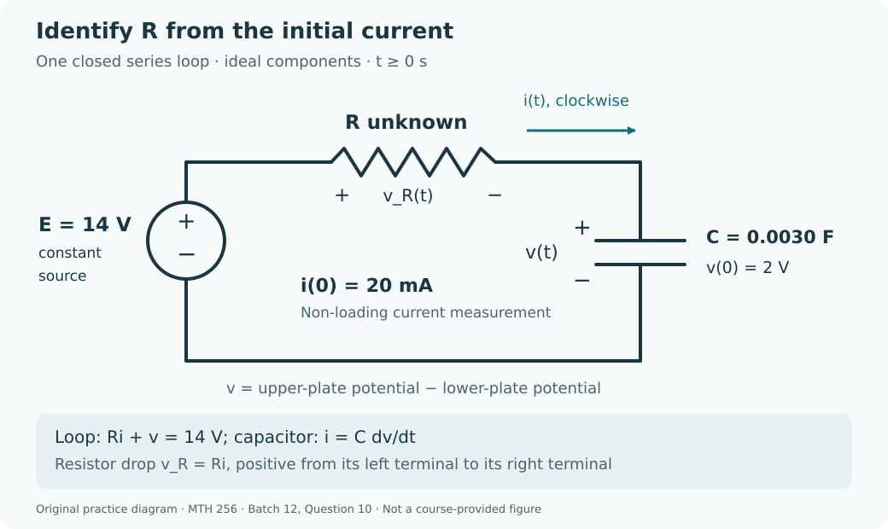

Course practice / Batch 12 / 2026-10-11 PDT
MTH 256
一阶微分方程
First-order differential equations · 阶数与线性、初值及解验证、方向场、分离变量、积分因子、牛顿冷却、指数与逻辑斯蒂增长、排液混合模型及 RC 电路
Different heights can share every slope
Consider \(y^{\prime}=3t^2\), y(1) = 3, and the candidates \(u(t)=t^3+2\) and \(w(t)=t^3-1\). Both t and y are dimensionless; consider all real t.
- Identify the independent variable, dependent variable, and order. Is the differential equation linear in y, even though its right-hand side contains a squared time variable?
- Differentiate both candidates and check the differential equation. Then check the initial condition and identify which candidate solves the stated IVP.
- Find the slope required at t = 1 and compare it with both candidate derivatives there. Find u(t) − w(t) for every t. Explain how two curves can satisfy the same differential equation while only one satisfies this IVP.
中文提示（不含解答）
线性是针对因变量及其导数而言；时间变量的幂次不决定方程是否线性。初值还会确定解曲线的竖直位置。
A central column makes the same pull steeper
For \(y^{\prime}=(1-y)/(1+t^2)\), both variables are dimensionless. Put t on the horizontal axis and y on the vertical axis.
- Calculate slopes at all nine points with \(t\in\{-1,0,1\}\) and \(y\in\{0,1,2\}\), then sketch a short segment at each point. Explain why the two outer columns match.
- Find all horizontal slope segments and all constant equilibrium solutions. State the sign of the slope above and below the equilibrium level.
- At each fixed height y ≠ 1, compare the slope magnitude at t = 0 with its magnitude at t = 1. Find the initial slopes of the solutions starting at y(0) = 0 and y(0) = 2, and state which initially rises and which initially falls. Do not solve the equation.
中文提示（不含解答）
先看分母是否会改变正负，再用分子判断升降；比较斜率大小时，应区分正负号与绝对值。
A square-root response uses a finite total input
Solve \(y^{\prime}=2e^{-t}\sqrt{y}\), y(0) = 1, for \(t\ge0\). Both variables are dimensionless, and the square root is the nonnegative real root. Work with the positive solution selected by the initial value.
- Separate variables and obtain an explicit solution. State the constant equilibrium solution that would be lost by dividing by \(\sqrt{y}\), and explain why it does not solve this IVP.
- Verify the differential equation and initial value. Find the first time y = 9/4, exactly and to three decimals, and calculate the slope at that time.
- Use your solution and the sign of its derivative to find the long-term limit and determine whether that limiting value is reached at any finite time. Check that your chosen branch stays positive for every t ≥ 0.
中文提示（不含解答）
分离时除以根号会漏掉一个恒定解；对本题初值，先确定根号的正分支，再验证平方后的表达式没有改变符号条件。
A logarithmic numerator competes with a growing denominator
For \(t\ge0\), solve \(y^{\prime}+y/(t+1)=1/(t+1)^2\), y(0) = 0. Both variables are dimensionless; ln denotes the natural logarithm.
- Find an integrating factor, write the product-derivative equation, and solve the IVP.
- Verify the differential equation and initial value. Find the value and slope at \(t=e-1\) exactly.
- Use the sign of the derivative to locate the greatest response on t ≥ 0, and give its time and value to three decimals as well as exactly. Find the long-term limit, using \(\lim_{x\to\infty}(\ln x)/x=0\).
中文提示（不含解答）
乘上积分因子后只需积分一个倒数函数；求最大值时，应检查导数在临界时刻两侧的符号。
A fading offset leaves a repeating response
Solve \(y^{\prime}+y=\sin t+\cos t\), y(0) = 2, for \(t\ge0\). Both variables are dimensionless, and angles are in radians. Use the supplied product-derivative identity rather than integration by parts.
- Use an integrating factor to solve the IVP, then verify the differential equation and initial value.
- Find the initial slope and \(y(\pi/2)\), exactly and to three decimals. Define \(d(t)=y(t)-\sin t\); find d(t) and determine whether it is positive, negative, or zero at finite times.
- Find the limit of d(t) as t increases. Does y(t) itself have a constant long-term limit? Explain using the continuing oscillation of sin t, and describe the curve that y(t) approaches.
中文提示（不含解答）
积分因子可以把右边识别为一个乘积的导数；与某条曲线的差趋近于零，并不一定表示函数本身趋近于一个常数。
A useful temperature window has an entrance and an exit
A sample starts at 100 °C in a room held at 20 °C. After 4 min it is at 60 °C. Assume \(T^{\prime}=-k(T-20)\), with constant k > 0 in min\(^{-1}\), T in °C, and t in minutes. A later procedure is allowed only while \(30\le T\le40\) °C. Use this model for \(t\ge0\).
- Determine k and T(t). Give k exactly and to four decimals with units, and verify both observed temperatures.
- Find when the sample first enters and when it leaves the allowed temperature window, and find the total time available. State the full closed interval of allowable starting times for an instantaneous procedure.
- Calculate the instantaneous cooling rates at the two window boundaries, exactly and to three decimals with units. Compare the average cooling rate while the sample is in the window with these two rates. Find the limiting temperature and explain why the sample eventually becomes too cold for this procedure.
中文提示（不含解答）
把温度窗口的上界、下界分别作为目标求时间；冷却速率带负号，比较快慢时可以另看其绝对值。
Equal gains take less time as a culture grows
A continuously modeled culture follows \(P^{\prime}=rP\), where r > 0 is constant. It has 160 organisms initially and 320 organisms after 6 hours. Assume no removals or carrying-capacity limit, and use t in hours for \(t\ge0\).
- Find r exactly with units and solve for P(t). Verify both population readings.
- Find the first times P = 200 and P = 240, exactly and to three decimals in hours. Compare the waiting times for the equal gains 160 → 200 and 200 → 240.
- Calculate the instantaneous growth rates at P = 200 and P = 240, exactly and to two decimals with units. Find the average growth rate during each of the two intervals in part 2, to two decimals, and explain why the later 40-organism gain takes less time.
中文提示（不含解答）
第二段等待时间是两个累计到达时刻之差；相等数量的增加，在指数增长过程中通常不需要相等时间。
The fastest future growth may already be happening
A culture follows \(N^{\prime}=0.15N(1-N/1200)\), N(0) = 900 organisms. Time t is in days, 0.15 has units day\(^{-1}\), and 1200 organisms is the carrying capacity. Treat N as continuous and use this model only for the requested future times \(t\ge0\).
- Find the nonnegative equilibrium populations, state the slope signs between and above them, and solve the IVP by separation.
- Find the first time N = 1080, exactly and to two decimals in days. Find the total growth rate at that time, with units.
- Find the greatest total growth rate actually attained along this solution for t ≥ 0, and when it is attained. Explain why using N = 600 as the answer would ignore the initial condition and time domain. Find the long-term population limit.
中文提示（不含解答）
公式在所有种群数量上的最大值，不一定会在给定初值之后的轨迹上出现；先确定未来会经过哪些数量。
Draining salt does not necessarily dilute the liquid
A tank initially contains 120 L of liquid with 6.0 kg of dissolved salt. There is no inflow. Perfectly mixed liquid drains at 3 L/min, and draining stops when 30 L remains. Assume perfect mixing, no evaporation, constant outflow, and no other losses. Let S(t) be salt mass in kg, \(C(t)=S(t)/V(t)\) concentration in kg/L, and t time in minutes. Model only the draining stage, including its endpoints.
- Find V(t), the stopping time, and the physical time interval. Set up the IVP for S(t), using the changing volume in the outgoing salt rate.
- Solve for S(t) and C(t), and verify the IVP. Find when half the initial salt mass remains. Is there any time in the stated interval when the concentration is half its initial value? Justify your answer.
- Find the final salt mass and concentration. Compute the total salt removed by integrating the outgoing salt rate, and check the mass balance. Explain why removing salty liquid lowers the salt mass without lowering the concentration in this model.
中文提示（不含解答）
没有流入时，体积也在减少；排走的混合液与罐内液体具有相同浓度，因此应分别检查盐量和浓度的变化。
Use an initial current to identify the resistor
The diagram shows one closed series loop with an ideal constant 14 V source, an unknown constant resistor R > 0 in ohms, and a capacitor C = 0.0030 F. Capacitor voltage v(t), in volts, is the upper-plate potential minus the lower-plate potential; v(0) = 2 V. Current i(t) is positive clockwise, into the upper plate, and a non-loading measurement gives i(0) = 20 mA. The resistor voltage drop in that direction is \(v_R=Ri\), so \(Ri+v=14\). Use t in seconds, ideal components, and the model for t ≥ 0.
- Determine R from the initial data. Write and solve the IVP for v(t), and find the RC time constant. Verify the initial voltage and differential equation.
- Find i(t) and \(v_R(t)\). Verify the measured initial current, and find the long-term limits of both voltages and the current. State the actual current direction at finite times.
- Find the first time the resistor and capacitor voltage drops are equal, exactly and to three decimals in seconds. Find both voltage drops and the current in mA at that instant. Calculate the signed charge delivered into the upper plate since t = 0, in coulombs, and check it against the change in \(Q_C=Cv\).

中文提示（不含解答）
先用初始时刻的回路方程识别电阻；两个电压降相等时，它们的和仍等于电源电压。电荷变化应由电容电压的变化计算。